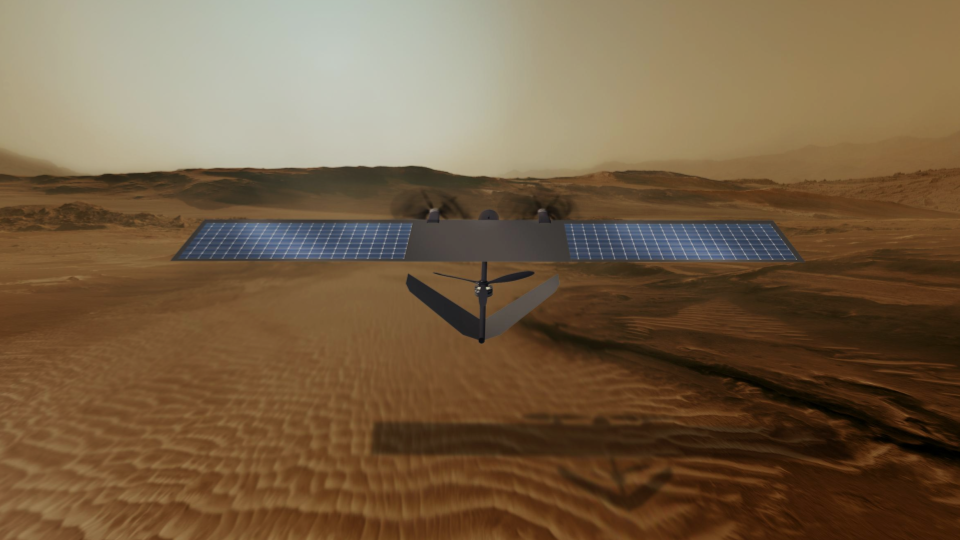
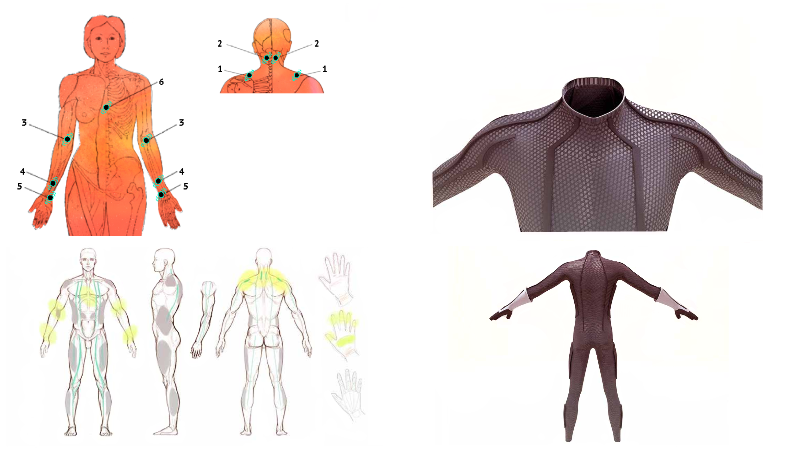

Mars is an incredibly harsh environment: global-covering dust storms, toxic terrain, thin atmosphere, extremely low temperatures. If we want to push the concept of human colonization of the red planet, much more research needs to be done on the adaptation of human physiology to such hard conditions. After 6 months of travel in zero-g condition and having dealt with the shock of a planetary reentry and landing, the first crew on Mars will face the challenge of recovery and rehabilitation, but also the need to assess and mitigate independently any possible health emergency.
To enable these opportunities, we are organizing SMOPS (Space Medicine OPerationS), an analog mission that will take place between April 24th and May 9th at the MDRS (Mars Desert Research Station), a research facility owned by The Mars Society in the Moab desert, Utah. For two weeks, our analog astronauts will conduct different experiments and test different operational scenarios to collect data about the health risk mitigation strategies we could face during a human mission to Mars.
The conditions offered by the MDRS are in many ways similar to the ones that can be found in a possible Mars habitat: desertic environment, crew isolation, limited living spaces and resources (water and food), local energy (solar panels) and food production (greenhouse). That will allow the astronauts to simulate, as best as we can on Earth, the difficulties that human crews will face on the martian surface.
The Crew
To apply to participate in the SMOPS mission in April 2021, please complete this Google form. N.B.: to complete the application, you will need to have a Gmail account.
About the form
In part 1 we will ask general information like your name, address and information about your fitness for the mission.
In part 2, you will have to choose the role in the crew (two choices, in order of preference) and you will have to justify your choice. Consider the crew roles description provided in this document.
In part 3, you will describe relevant experience for your participation in this mission (do not put information that is not relevant).
In part 4 you will be asked to provide a detailed CV (max 2 pages) and a one-page research proposal summary as Word documents, and two references for your application.
At the end of the form, you will find the GDPR compliance agreement.
Dates
15th of September
Application call deadline
Second half of September
First selection results and start of video interviews
Aerial drone technology has considerably evolved in the past years, thanks to the increasing number of potential applications. Hardware miniaturization and deep-learning algorithms brought this technology to a fundamental role in high-risk scenarios. Mars, due to its geological and atmospheric properties, represents a totally new ground to expand the boundaries of this technology. Aerial drones can become a fundamental subsystem of human activities on Mars, and are especially suitable for the use as long-range, fast-response healthcare providers on the martian surface (as on earth): logistics, safety inspections, search and rescue missions and medical devices deployment can be safely left to swarms of autonomous flying drones. We will test different hardware and scenarios to validate our researches.

Stress factors can play an essential role in the performances of future astronauts on Mars. In long-term missions such as expeditions towards Mars, stress can be triggered by predictable and unpredictable events and needs to be controlled through training, monitoring and support. In this experiment, the first layer of a spacesuit contains a system that measures and relieves stress level using electroacupuncture, a variation of the traditional medicine acupuncture technique. Sensors will be placed in the points of the body traditionally employed by acupuncture medicine. With reference to the figure below, these points are related to the measurement of:
Nervous tension and stiff neck.
Stress, fatigue, insomnia, heaviness in the head, eye fatigue
Stomach, anxiety, arm pain, elbow pain and discomfort in the chest.
Nausea, anxiety, palpitations and pain in the wrist.
Emotional imbalance, fear, nervousness, anxiety and forgetfulness.
Nervousness, stress, tightness in the chest, anxiety, depression, hysteria, etc.
The data collected by the sensors are then visualized and analyzed through a software tool.

Wearable devices will play a key role in future manned exploration of the Moon and Mars. In this experiment, we will test a new type of shoes used to help astronauts to identify parameters of the explored environment and biometrics of their health condition, including emotional responses. A set of sensors will be included in a new model of shoes, specifically designed and produced for this purpose. The signals detected by sensors will be transmitted to the mission control to visualize and monitor the evolution of Extra-Vehicular Activities.
News
We are starting the crew selection process today, until the 15th of September. First, the candidates will have to fill out a Google form with some general information and their experience relevant to the mission. After, they will be informed about the outcome of their application and, in case of a positive result, they will be asked to do a video interview with Mars Planet, the organisers of the mission. Interested in joining our crew? Visit the crew section and apply!
Three new experiments have been added to the research that we will carry out during our time at the MDRS next year. We will use drones to support the crew in case of medical emergencies, observe the effects of acupuncture for stressfull situations and test some innovative sensing technologies on smart wearables. Check the research section!
The new mission logo was designed to represent all the elements that matter to the mission. Our focus will be medical operations, hence the Rod of Asclepius, international symbol for medicine. Our simulated martian mission will take place on Earth, with Mars as a final target.
After discussing with the Mars Desert Research Station, the time slot dedicated to SMOPS mission in 2021 has been confirmed. Despite the current COVID-19 situation, the organisation of the mission continues.
Our Sponsors
SMOPS is a non-profit research mission, fueled by private research funds from our sponsors. The SMOPS Crew is incredibly appreciative of the support of:
If you are interested in contributing to our field mission or you want your research objectives to be included in our experiment schedule, contact us!
Contact
For any question, press release or sponsorship inquiry, you can contact us at contact@smops.space!